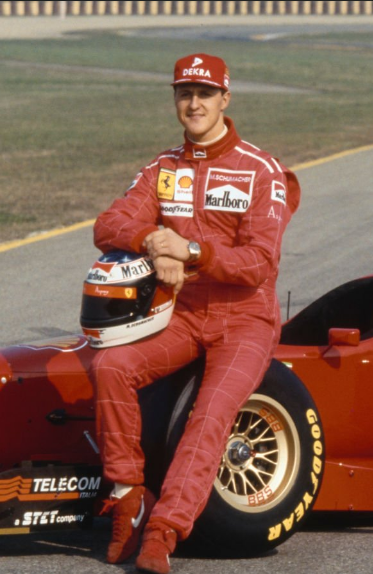

Nascido em 3 de janeiro de 1969, na Alemanha, é um ícone da Fórmula 1. Ele fez sua estreia em 1991 e rapidamente se destacou por suas habilidades excepcionais. Schumacher conquistou 7 títulos mundiais, além de ser conhecido por suas performances dominantes com a Ferrari, onde alcançou um recorde de 5 títulos consecutivos de 2000 a 2004.